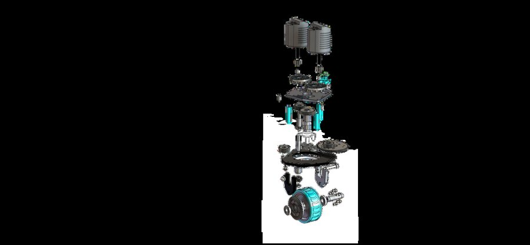
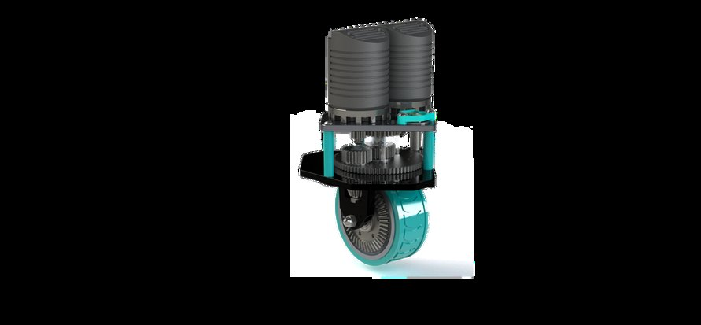

Swerve Drive Module
This one was just for me: a full swerve drive module, based on West Coast Products' Swerve X, modeled so it could actually be built. It came to 43 unique parts with zero interferences and correct motion through every degree of freedom. I leaned on SolidWorks surfacing, sheet metal, and weldments, checked the interfaces and clearances against real fabrication, and made an exploded animation to show how it moves and fits together.


